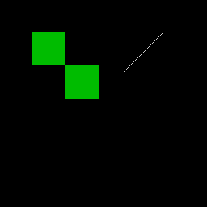

這一段在整個作業流程中的角色
這一段解決 union-find 後的 label 等價問題，確保同一物件的 bbox 會被整合到同一個 root component。
CCL 完成後，某些 provisional label 其實屬於同一個 root component，所以 bbox 也要一起 merge，否則最後畫框會分裂。
S_LB_ROW2S_BBOX_INITfind_root_funcbbox

P1 labels
點擊可放大
architecture debug enhanced
點擊可放大 S_LB_ROW2: begin
case (lb_phase)
2'd0: begin
Ur_CEN<=1'b0; Ur_WEN<=1'b1;
Ur_A<={lb_row, lb_col};
lb_phase<=2'd1;
end
2'd1: begin
Ur_CEN<=1'b0; Ur_WEN<=1'b1;
Ur_A<={lb_row, lb_col};
lb_phase<=2'd2;
end
2'd2: begin
// CCL line buffer uses the same V21 bank-select update.
case (lb_prev_sel)
2'd0: linebuf_bank0[lb_col]<=Ur_Q[7:0];
2'd1: linebuf_bank1[lb_col]<=Ur_Q[7:0];
2'd2: linebuf_bank2[lb_col]<=Ur_Q[7:0];
default: ;
endcase
lb_phase<=2'd0;
if (lb_col==8'd255) begin
lb_prev_sel <= lb_curr_sel;
lb_curr_sel <= lb_next_sel;
lb_next_sel <= lb_prev_sel;
lb_col<=8'd0; state<=S_CCL_SCAN;
end else lb_col<=lb_col+8'd1;
end
default: lb_phase<=2'd0;
endcase
end
// -----------------------------------------------
// S_BBOX_INIT
// -----------------------------------------------
S_BBOX_INIT: begin
if (label_idx<next_label) begin
root_label = find_root_func(label_idx);
if ((root_label!=label_idx)&&bbox_valid[label_idx]) begin
bbox_valid[root_label]<=1'b1;
if (bbox_xmin[label_idx]<bbox_xmin[root_label]) bbox_xmin[root_label]<=bbox_xmin[label_idx];
if (bbox_xmax[label_idx]>bbox_xmax[root_label]) bbox_xmax[root_label]<=bbox_xmax[label_idx];
if (bbox_ymin[label_idx]<bbox_ymin[root_label]) bbox_ymin[root_label]<=bbox_ymin[label_idx];
if (bbox_ymax[label_idx]>bbox_ymax[root_label]) bbox_ymax[root_label]<=bbox_ymax[label_idx];
if (bbox_border[label_idx]) bbox_border[root_label]<=1'b1;
bbox_valid[label_idx]<=1'b0;
end
label_idx<=label_idx+9'd1;
end else begin
addr_cnt<=16'd0; req_cnt<=17'd0; label_idx<=9'd1;
edge_stage<=2'd0; edge_ctr<=8'd0;
state<=S_BOXMAP_GEN;
end
end
| Line | 原始程式碼 | 流程分類 | 中文說明 |
|---|---|---|---|
| 778 | S_LB_ROW2: begin | 十四、CCL 跨列更新與 Root Label Merge | 進入狀態 S_LB_ROW2：CCL 每完成一列後更新 line buffer。 |
| 779 | case (lb_phase) | 十四、CCL 跨列更新與 Root Label Merge | 開始 case 分支，根據 state 或 phase 執行不同控制流程。 |
| 780 | 2'd0: begin | 十四、CCL 跨列更新與 Root Label Merge | 此行屬於 十四、CCL 跨列更新與 Root Label Merge，用來完成 drawBbox 的控制或資料路徑。 |
| 781 | Ur_CEN<=1'b0; Ur_WEN<=1'b1; | 十四、CCL 跨列更新與 Root Label Merge | 非阻塞指定，在 clock 邊緣更新暫存器；屬於 十四、CCL 跨列更新與 Root Label Merge。 |
| 782 | Ur_A<={lb_row, lb_col}; | 十四、CCL 跨列更新與 Root Label Merge | 非阻塞指定，在 clock 邊緣更新暫存器；屬於 十四、CCL 跨列更新與 Root Label Merge。 |
| 783 | lb_phase<=2'd1; | 十四、CCL 跨列更新與 Root Label Merge | 非阻塞指定，在 clock 邊緣更新暫存器；屬於 十四、CCL 跨列更新與 Root Label Merge。 |
| 784 | end | 十四、CCL 跨列更新與 Root Label Merge | 結束目前 begin-end 區塊。 |
| 785 | 2'd1: begin | 十四、CCL 跨列更新與 Root Label Merge | 此行屬於 十四、CCL 跨列更新與 Root Label Merge，用來完成 drawBbox 的控制或資料路徑。 |
| 786 | Ur_CEN<=1'b0; Ur_WEN<=1'b1; | 十四、CCL 跨列更新與 Root Label Merge | 非阻塞指定，在 clock 邊緣更新暫存器；屬於 十四、CCL 跨列更新與 Root Label Merge。 |
| 787 | Ur_A<={lb_row, lb_col}; | 十四、CCL 跨列更新與 Root Label Merge | 非阻塞指定，在 clock 邊緣更新暫存器；屬於 十四、CCL 跨列更新與 Root Label Merge。 |
| 788 | lb_phase<=2'd2; | 十四、CCL 跨列更新與 Root Label Merge | 非阻塞指定，在 clock 邊緣更新暫存器；屬於 十四、CCL 跨列更新與 Root Label Merge。 |
| 789 | end | 十四、CCL 跨列更新與 Root Label Merge | 結束目前 begin-end 區塊。 |
| 790 | 2'd2: begin | 十四、CCL 跨列更新與 Root Label Merge | 此行屬於 十四、CCL 跨列更新與 Root Label Merge，用來完成 drawBbox 的控制或資料路徑。 |
| 791 | // CCL line buffer uses the same V21 bank-select update. | 十四、CCL 跨列更新與 Root Label Merge | 原始註解，用來說明此段設計目的或注意事項。 |
| 792 | case (lb_prev_sel) | 十四、CCL 跨列更新與 Root Label Merge | 開始 case 分支，根據 state 或 phase 執行不同控制流程。 |
| 793 | 2'd0: linebuf_bank0[lb_col]<=Ur_Q[7:0]; | 十四、CCL 跨列更新與 Root Label Merge | 非阻塞指定，在 clock 邊緣更新暫存器；屬於 十四、CCL 跨列更新與 Root Label Merge。 |
| 794 | 2'd1: linebuf_bank1[lb_col]<=Ur_Q[7:0]; | 十四、CCL 跨列更新與 Root Label Merge | 非阻塞指定，在 clock 邊緣更新暫存器；屬於 十四、CCL 跨列更新與 Root Label Merge。 |
| 795 | 2'd2: linebuf_bank2[lb_col]<=Ur_Q[7:0]; | 十四、CCL 跨列更新與 Root Label Merge | 非阻塞指定，在 clock 邊緣更新暫存器；屬於 十四、CCL 跨列更新與 Root Label Merge。 |
| 796 | default: ; | 十四、CCL 跨列更新與 Root Label Merge | 此行屬於 十四、CCL 跨列更新與 Root Label Merge，用來完成 drawBbox 的控制或資料路徑。 |
| 797 | endcase | 十四、CCL 跨列更新與 Root Label Merge | 結束 case 分支。 |
| 798 | lb_phase<=2'd0; | 十四、CCL 跨列更新與 Root Label Merge | 非阻塞指定，在 clock 邊緣更新暫存器；屬於 十四、CCL 跨列更新與 Root Label Merge。 |
| 799 | if (lb_col==8'd255) begin | 十四、CCL 跨列更新與 Root Label Merge | 條件判斷，用來控制 十四、CCL 跨列更新與 Root Label Merge 的流程分支、邊界條件或狀態轉移。 |
| 800 | lb_prev_sel <= lb_curr_sel; | 十四、CCL 跨列更新與 Root Label Merge | 非阻塞指定，在 clock 邊緣更新暫存器；屬於 十四、CCL 跨列更新與 Root Label Merge。 |
| 801 | lb_curr_sel <= lb_next_sel; | 十四、CCL 跨列更新與 Root Label Merge | 非阻塞指定，在 clock 邊緣更新暫存器；屬於 十四、CCL 跨列更新與 Root Label Merge。 |
| 802 | lb_next_sel <= lb_prev_sel; | 十四、CCL 跨列更新與 Root Label Merge | 非阻塞指定，在 clock 邊緣更新暫存器；屬於 十四、CCL 跨列更新與 Root Label Merge。 |
| 803 | lb_col<=8'd0; state<=S_CCL_SCAN; | 十四、CCL 跨列更新與 Root Label Merge | 非阻塞指定，在 clock 邊緣更新暫存器；屬於 十四、CCL 跨列更新與 Root Label Merge。 |
| 804 | end else lb_col<=lb_col+8'd1; | 十四、CCL 跨列更新與 Root Label Merge | 非阻塞指定，在 clock 邊緣更新暫存器；屬於 十四、CCL 跨列更新與 Root Label Merge。 |
| 805 | end | 十四、CCL 跨列更新與 Root Label Merge | 結束目前 begin-end 區塊。 |
| 806 | default: lb_phase<=2'd0; | 十四、CCL 跨列更新與 Root Label Merge | 非阻塞指定，在 clock 邊緣更新暫存器；屬於 十四、CCL 跨列更新與 Root Label Merge。 |
| 807 | endcase | 十四、CCL 跨列更新與 Root Label Merge | 結束 case 分支。 |
| 808 | end | 十四、CCL 跨列更新與 Root Label Merge | 結束目前 begin-end 區塊。 |
| 809 | 十四、CCL 跨列更新與 Root Label Merge | 空白行，用來分隔段落，提升可讀性。 | |
| 810 | // ----------------------------------------------- | 十四、CCL 跨列更新與 Root Label Merge | 原始註解，用來說明此段設計目的或注意事項。 |
| 811 | // S_BBOX_INIT | 十四、CCL 跨列更新與 Root Label Merge | 原始註解，用來說明此段設計目的或注意事項。 |
| 812 | // ----------------------------------------------- | 十四、CCL 跨列更新與 Root Label Merge | 原始註解，用來說明此段設計目的或注意事項。 |
| 813 | S_BBOX_INIT: begin | 十四、CCL 跨列更新與 Root Label Merge | 進入狀態 S_BBOX_INIT：把非 root label 的 bbox 合併到 root label。 |
| 814 | if (label_idx<next_label) begin | 十四、CCL 跨列更新與 Root Label Merge | 條件判斷，用來控制 十四、CCL 跨列更新與 Root Label Merge 的流程分支、邊界條件或狀態轉移。 |
若要看完整逐行內容，請進入「逐行說明」頁。
中文重點整理
- 程式位置：Lines 778–832
- 此段主要目標：處理 CCL line buffer row update，以及把非 root label 的 bbox 合併回 root label。
- 閱讀建議：先看相關圖檔，再看原始 code，最後看逐行說明示範。
- 對報告的幫助：這一頁的圖片與說明很適合直接當作一個報告子段落。